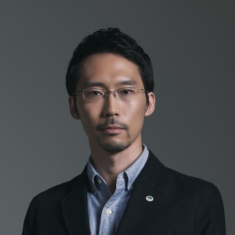
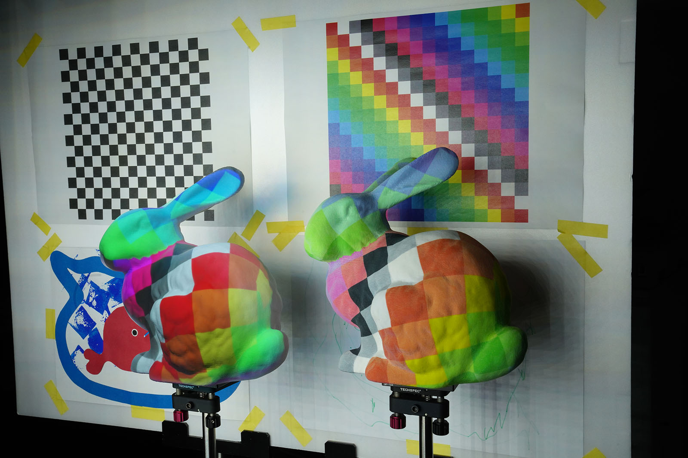
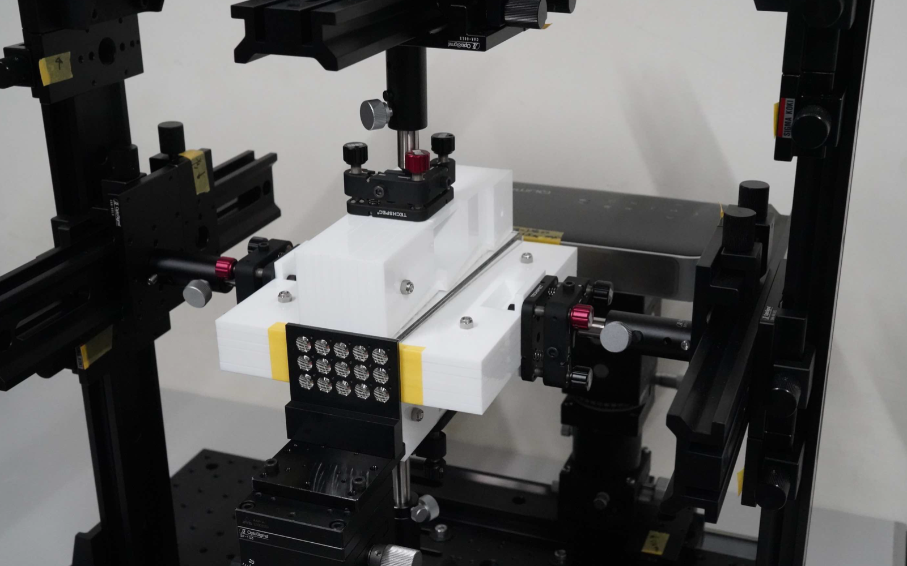
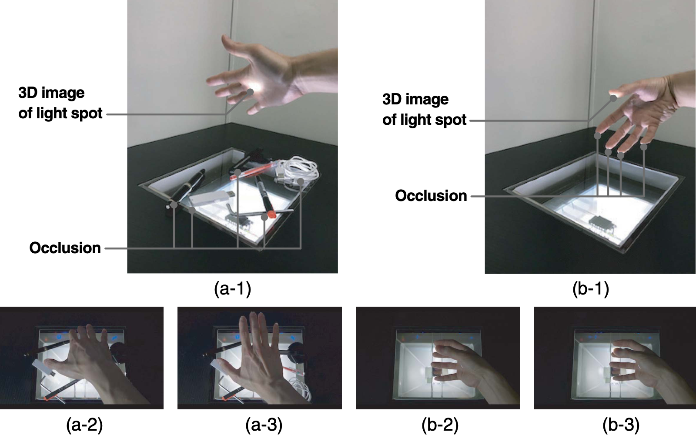
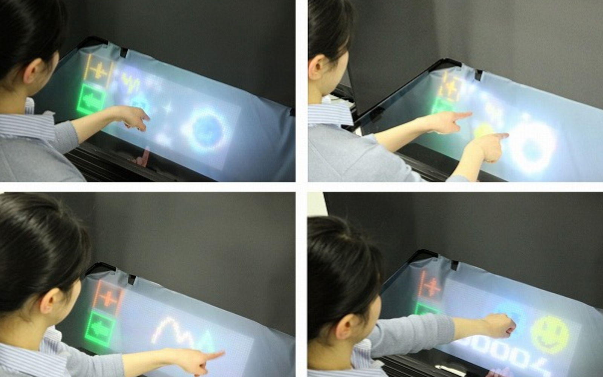
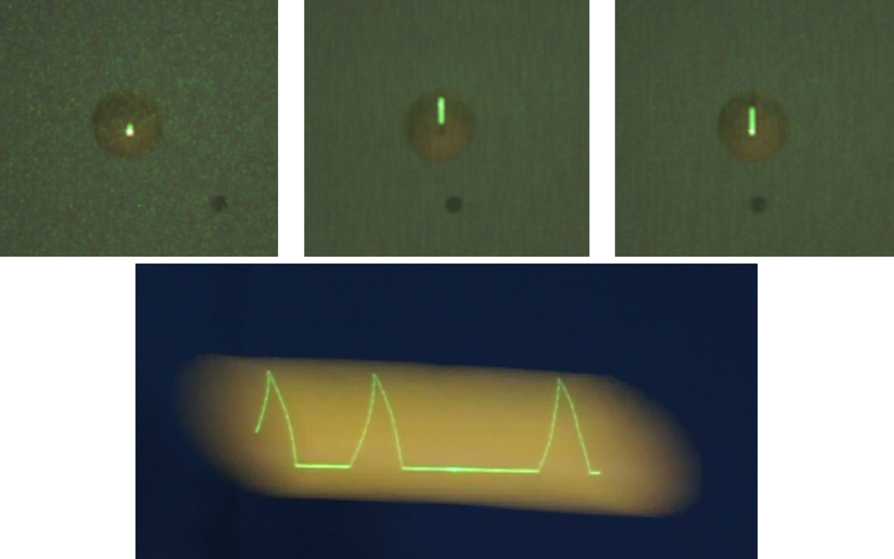

Masahiko Yasui, Ph.D.

Papers
|  |
|
Masahiko Yasui, Ryota Iwataki, Masatoshi Ishikawa, and Yoshihiro Watanabe:
Projection Mapping with a Brightly Lit Surrounding Using a Mixed Light Field Approach,
IEEE Transactions on Visualization and Computer Graphics, DOI: 10.1109/TVCG.2024.3372132 (IEEE VR) (2024)
[Link]
|
|  |
|
Masahiko Yasui, Yoshihiro Watanabe, and Masatoshi Ishikawa:
Wide viewing angle with a downsized system in projection-type integral photography by using curved mirrors,
Optics Express, Vol.29, Issue 8, pp.12066-12080 (2021)
[Link]
|
|  |
|
Masahiko Yasui, Yoshihiro Watanabe, and Masatoshi Ishikawa:
Occlusion-robust Sensing Method by Using the Light-field of a 3D Display System toward Interaction with a 3D Image,
Appl. Opt., Vol.58, Issue 5, pp.A209-A277 (2019)
[Link]
|
|  |
|
Masahiko Yasui, M. Sakti Alvissalim, Hirotsugu Yamamoto, and Masatoshi Ishikawa:
Immersive 3D Environment by Floating Display and High-Speed Gesture UI Integration,
Trans. on SICE, Vol.52, No.3, pp.134-140 (2016) (Japanese)
[Link]
|
|  |
|
Masahiko Yasui, Alvaro Cassinelli, Kohei Okumura, Hiromasa Oku, and Masatoshi Ishikawa:
Proposal and fundamental study of a display method relying on afterimage and a flying tracked object as support for projection,
Transactions of the Virtual Reality Society of Japan, Vol.20, No. 1, pp.55-64 (2015) (Japanese)
[Link]
|
Conference
- Masahiko Yasui, Yoshihiro Watanabe, and Masatoshi Ishikawa:
Dynamic and Occlusion-Robust Light Field Illumination, ACM SIGGRAPH ASIA 2021 Posters (SIGGRAPH ASIA 2021) (Tokyo, Japan, 2021.12.14-17)／Proceedings, Article No.35, pp.1–2 (2021)
[Link]
- Masahiko Yasui, Yoshihiro Watanabe, and Masatoshi Ishikawa:
Projection-type integral 3D display using mirrors facing each other for a wide viewing angle with a downsized system,
SPIE Photonics West OPTO, Conf. on Advances in Display Technologies X (San Francisco, 2020.2.5)／Proceedings, SPIE 11304, 1130406 (2020)
[Link]
- Masahiko Yasui, Yoshihiro Watanabe, and Masatoshi Ishikawa:
Occlusion-Robust 3D Sensing Using Aerial Imaging,
IEEE International Conference on Computational Photography (ICCP 2016) (Evanston, 2016.5.15)/Proceedings, pp.170-179 (2016)
[Link]
- Hirotsugu Yamamoto, Masahiko Yasui, M. Sakti Alvissalim, Masashi Takahashi, Yuka Tomiyama, Shiro Suyama, and Masatoshi Ishikawa:
Floating display screen formed by AIRR (Aerial imaging by retro-reflection) for interaction in 3D space,
2014 IEEE International Conference on 3D Imaging (IC3D 2014) (Liège, Belgium, 2014.12.9)／Proceedings, Paper40, pp.1-5 (2014)
[Link]
- Muhammad Sakti Alvissalim, Masahiko Yasui, Chihiro Watanabe, and Masatoshi Ishikawa:
Immersive Virtual 3D Environment based on 499 fps Hand Gesture Interface,
2014 International Conference on Advanced Computer Science and Information Systems (Jakarta, 2014.10.18)／Proceedings, pp.198-203 (2014)
[Link]
Domestic Conference
- 安井雅彦，浜直史，森靖英，和久井一則:
背景入替えデータ集計によるXAI結果評価方式の提案，第20回情報科学技術フォーラム (FIT2021) 講演論文集，vol. 3, pp. 103-104 (2021)
- 安井雅彦，友田敦，恵木正史:
複数施策最良組合せ探索における効率化手法の検討，
電子情報通信学会 ライフインテリジェンスとオフィス情報システム研究会(LOIS) (宮古島市，2019.3.7)／信学技報, vol. 118, no. 485, LOIS2018-65, pp. 57-60 (2019)
- 安井雅彦，渡辺義浩，石川正俊:
インテグラルフォトグラフィ型システムの省スペース化のための鏡を利用した投影に関する検討，
映像情報メディア学会 情報ディスプレイ研究会(IDY) (東京，2018.10.25)／映情学技報, vol. 42, no. 35, IDY2018-41, pp. 1-3, (2018)
- 安井雅彦，坂田匡通，畑崎恵介，上原敬太郎，井出貴也，藪崎仁史:
通信パケットサンプリングの相関分析によるアプリケーションシステムの異常検出方法の評価，
電子情報通信学会 ディペンダブルコンピューティング研究会(DC) (登別，2017.5.24)／信学技報, vol. 117, no. 45, DC2017-14, pp. 79-82 (2017)
- 安井雅彦，渡辺義浩，石川正俊:
構造化光空間を用いた遮蔽に頑健な浮遊型入力機構の提案，
第16回 計測自動制御学会 システムインテグレーション部門講演会(SI2015) (名古屋, 2015.12.14) ／講演会論文集, pp.0371-0374 (2015)
- 安井雅彦，渡辺義浩，石川正俊:
空中像形成技術を用いた構造化光空間による3次元計測手法の提案，
第20回日本バーチャルリアリティ学会大会(VRSJ2015) (東京，2015.9.10)／講演会論文集，pp.249-252 (2015)
- 安井雅彦，M. Sakti Alvissalim，山本裕紹，石川正俊:
空中映像と高速3Dジェスチャー認識技術の統合による直感的操作可能なインタラクションシステム，
第15回 計測自動制御学会 システムインテグレーション部門講演会(SI2014)（東京，2014.12.17）／講演会論文集, pp.1404-1407 (2014)
- 安井雅彦:
血中乳酸濃度測定の選手への応用-自転車ロード競技- ，
第10回乳酸研究会 (東京，2014.2.15)
- 安井雅彦，カシネリ アルバロ，奥村光平，奥寛雅，石川正俊:
追跡的光線投影による残像を用いた大空間情報提示手法の提案と基礎検討，
第18回日本バーチャルリアリティ学会大会(VRSJ2013) (大阪，2013.9.20)／講演会論文集，pp.499-502 (2013)
Experience
- Engineer - Radiant Vision Systems, LLC. (2022.10-)
- Engineer - Konica Minolta, Inc. (2022.7-2022.9)
- Researcher - Watanabe Lab, Tokyo Institute of Technology (work for one day every two weeks) (2022.4-2023.3)
- Researcher - Hitachi, Ltd. Research & Development Group (2016.4-2022.6)
- Road Racer - SHIMANO RACING TEAM, SHIMANO INC. (2013.1-2013.12)
Education
- Ph.D. in Information Science and Technology, Graduate School of Information Science and Technology,
The University of Tokyo (2017.9-2022.03)
- Master in Information Science and Technology, Graduate School of Information Science and Technology,
The University of Tokyo (2013.4-2016.3)
- Bachelor in Engineering, Faculty of Engineering, The University of Tokyo (2009.4-2013.3)
Awards
2022 Dean's Award, Graduate School of Information Science and Technology, The University of Tokyo
2017 IEICE Best Young Author Presentation Award
2016 Dean's Award, Graduate School of Information Science and Technology, The University of Tokyo
2015 Young Author Award, the Society of Instrument and Control Engineers
2015 SI2015 Best Presentation Award
2014 SI2014 Best Presentation Award
2014 Best Student Paper Award, 2014 Int. Conf. on Advanced Computer Science and Information Systems
(Co-author)
2013 TOUR DE OKINAWA UCI1.2(Champion road race 210km) "King of Mountain"
Patent
US10142601B2, Hiromasa Oku, Alvaro Cassinelli, Masahiko Yasui, Masatoshi Ishikawa: INFORMATION PRESENTATION DEVICE, Nov. 27, 2018
Miscellany